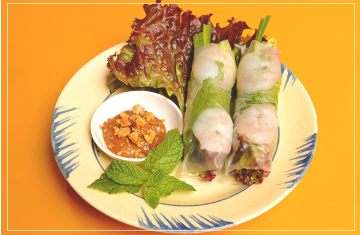

オススメ
野菜たっぷり！ハーブたっぷり！
ベトナム レストラン。
生春巻やフォーだけじゃない！！
多彩で美味しいベトナム料理を、
まるでベトナムにいるかのような空間で楽しんでいただけるお店です。

メニュー
生春巻の本場、南部スタイルの特製ピーナッツソースでミントと一緒にどうぞ

ベトナム式パリパリお好み焼き ￥860
米粉の生地をパリッと焼き揚げてます

揚げ魚のライスペーパー包み ￥1,380
下味を付けて揚げた魚を野菜やハーブといっしょにライスペーパーで巻いて食べます

ハノイ式つけ麺 ￥750
オバマ前大統領もハノイで食べました

鶏のフォー ￥830
国産鶏の出汁がしっかり

ベトナムサンドイッチ ￥750
チキンをメインになますとパクチーがいい仕事
コース
パリパリ生地を新鮮野菜＆ハーブと一緒に！プラス ￥1,500で2h飲み放題付き
詳しくは店舗までお問い合わせください。
◇前菜
◇紫芋とエビ団子のスープ
◇ライスペーパーで包んだ揚げ春巻き
◇白身魚のすり身のライスペーパー挟み揚げ
◇バインセオ（ベトナム南部のお好み焼き風）
◇鶏モモの炭火焼き
◇フォー・ボー（牛しゃぶしゃぶのフォー）

ドリング
333 ピール
￥500
ベトナム定番で比較的ドライな”バーバーバー”ビール。泡の香りをお楽しみください。

ハノイ ピール ￥500
ベトナム首都ハノイ原産で適度な苦味とフルーティな味が特徴
サイゴン ピール ￥550
ホーチミンを代表するビール。ドライだが味はさっぱりでライト
アクセス
住所：福岡県福岡市南区大橋21-29
電話番号：080-3508-2148
営業時間：9:00 ～ 22:00